Current Projects
Film Point Average
|
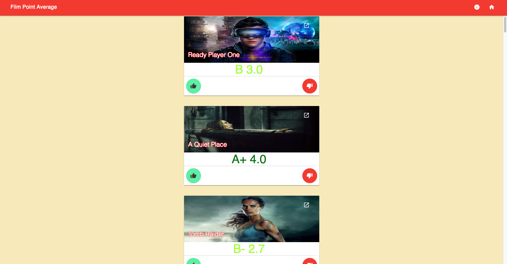
|
Film Point Average is a site that aims to legitimize online audience reaction to new films by only
allowing one vote per connection to the site for a specific film.
Films are given a grade on a 4.0 scale {i.e. A, A+ = 4.0, A- = 3.7, B+ = 3.3 etc.} based on user input.
A films grade is then incorporated into the calculations for its respective cast/crew members Film Point Averages.
In the future, an upcoming films cast/crew members Film Point Averages will be used to predict its audience reaction.
Selected UI/UX Design Projects
Coloring Interaction: "Region Color"
|
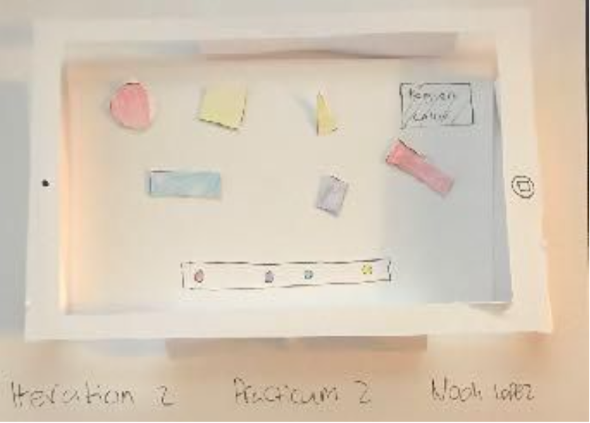
|
Check out my design process here!
See Region Color in action here!
Proxemic Mirror
|
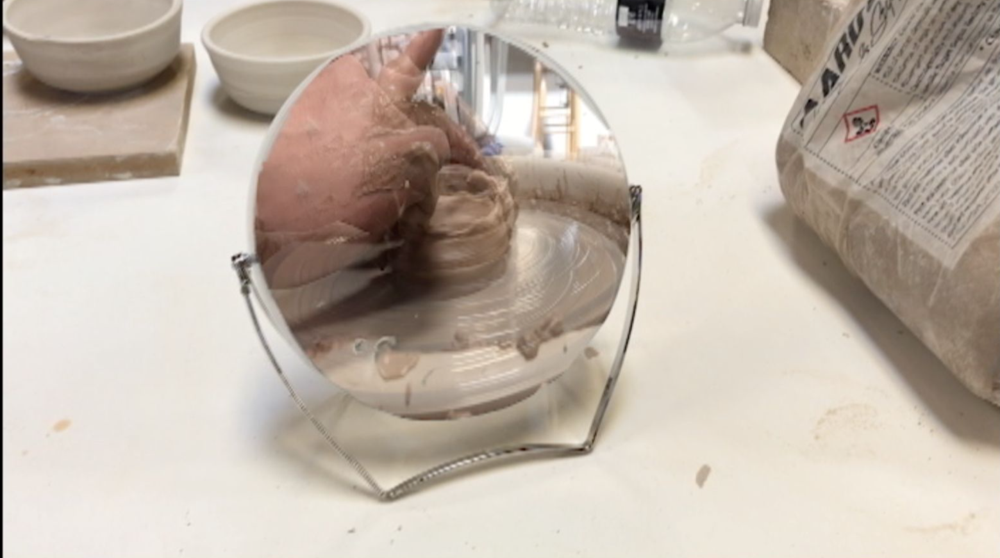
|
Check out my design process here!
See my Proxemic Mirror in action here!
Power Up!
|
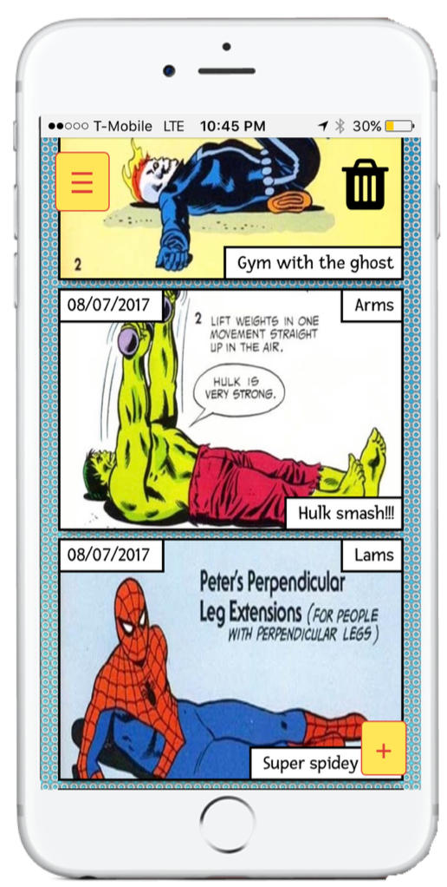
|
Check out my design process here!
See my Power Up! in action here!
Selected Game Design Projects
Ants vs. SomeBees
|
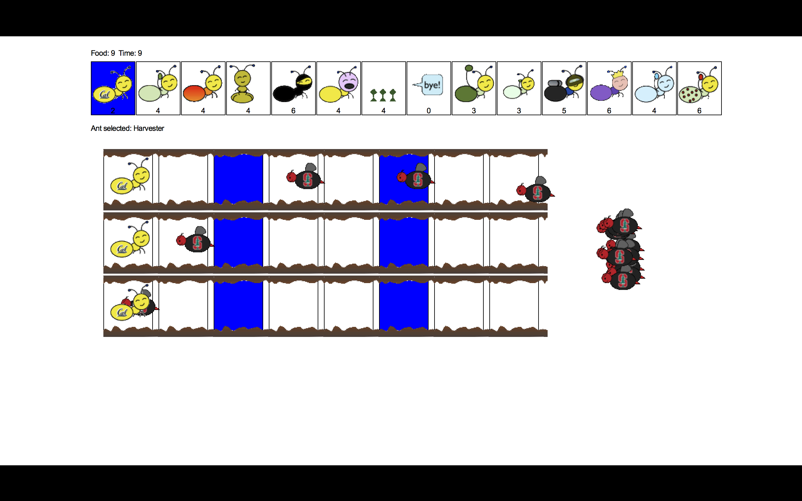
|
Ants vs. SomeBees is a python Plants vs. Zombies Clone. In the game the player is given a variety
of different Ants (i.e. thrower, defense etc.) and is tasked with vanquishing all those pesky bees.
Bomb Checkers!
|
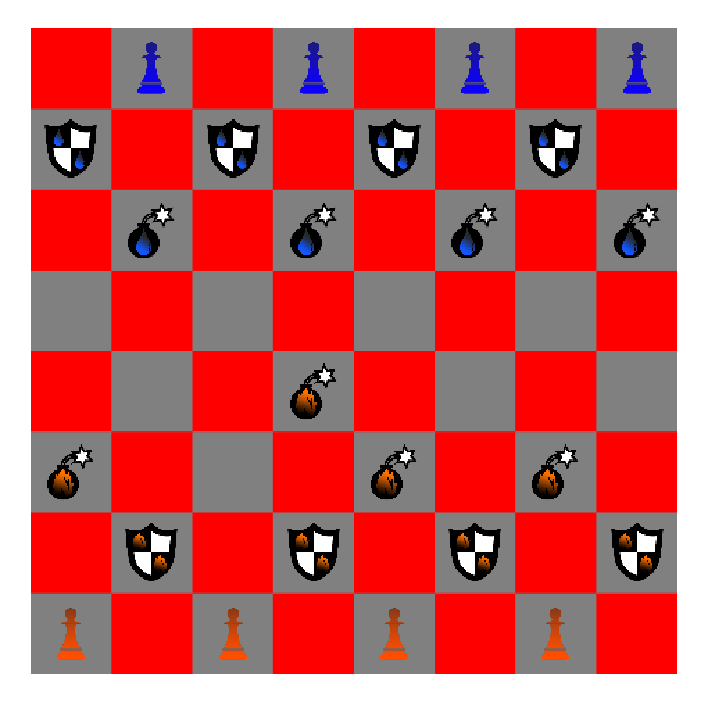
|
Bomb Checkers! is a java based checkers game with a twist. When a bomb piece
jumps over an opponents piece it takes not only captures the jumped piece but also those in the
5x5 square around it, with the exception that shield pieces are protected from the explosions.
Suitcase
|
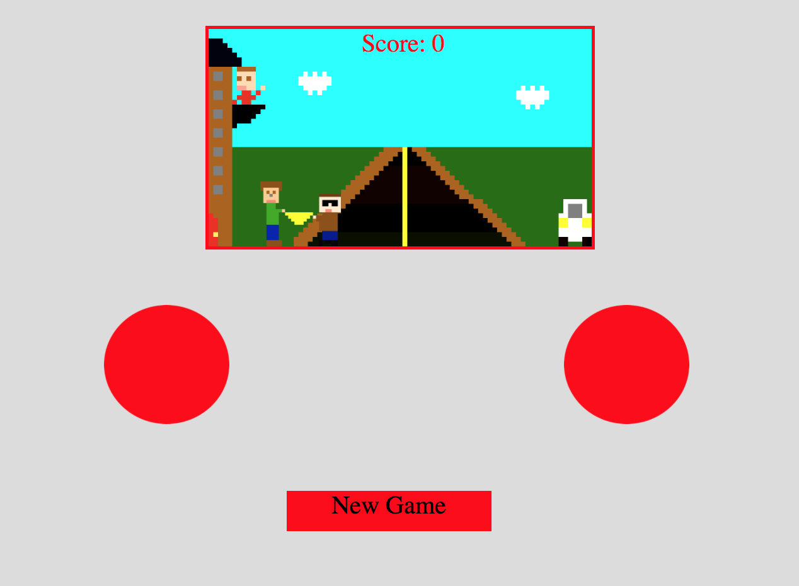
|
Suitcase is a javascript/jQuery/HTML remake of the classic Nintendo Game and Watch game "Fire!"
Help the boys get ready for vacation by moving their suitcases from their apartment to the car.
Make sure you don't drop any cases though!
Future
As you can see from my projects above, I have utlized 2D sprites exclusively for my past projects.
Luckily, I have had the privilege of taking a course in Computer Graphics this semseter.
As a result, I have been exposed to nearly all aspects of the graphics pipeline.
I am planning to use this knowledge to create an my first openGL based game for my final project.
In the next section I have some selected works from my graphics class.
Graphics Projects
Rasterizer
|
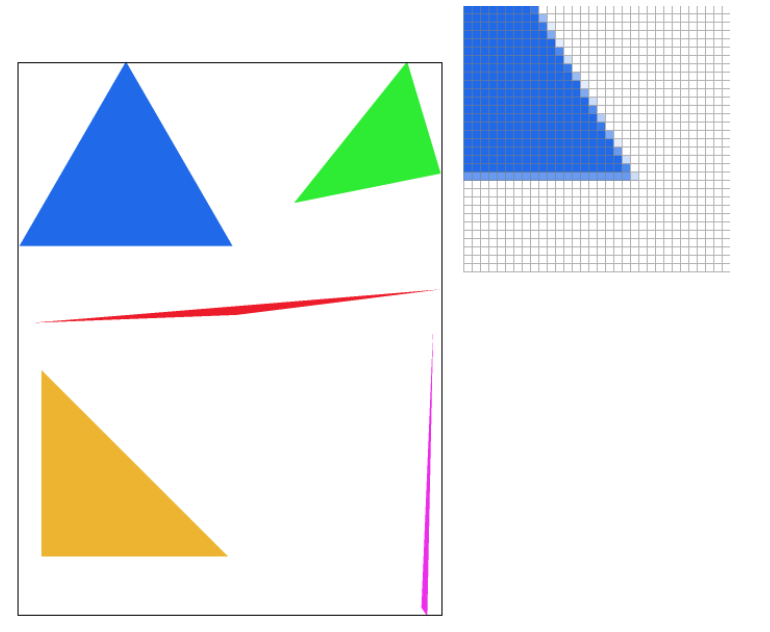
|
Mesh Editor
|
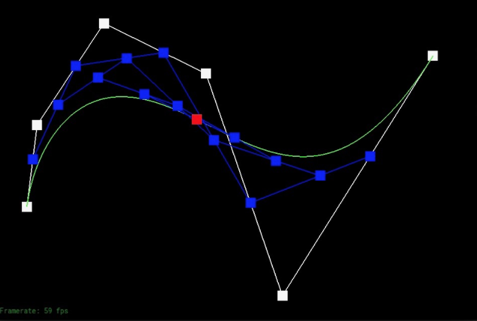
|
Check out my Mesh Editor here!
Ray Tracer Part 1
|
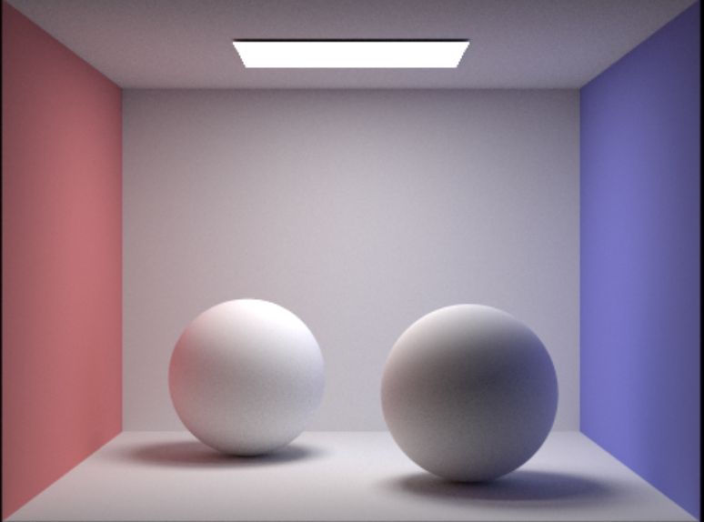
|
Check out my first Ray Tracer here!
Ray Tracer Part 2
|
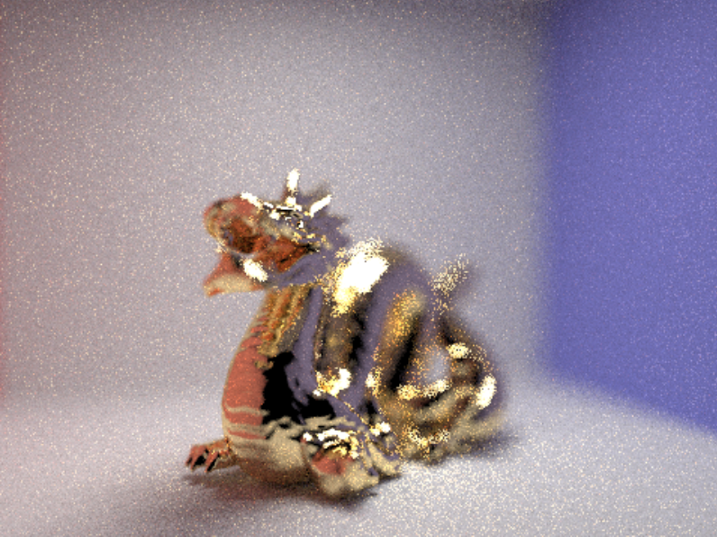
|